All 12 solar shrines established during King Divodasa's reign (Kashi Khand Ch. 9).
Kaal Bhairav (Kotwal of Kashi) + all eight directional guardian Ashtabhairavas.
Annapurna, Vishalakshi, Navagauri, Navadurga & Dashamaha Vidya research matrix.
Main Shiva temples & verified Kashi counterparts of all 12 Pan-India Jyotirlingas.
Dhundhi Vinayak, Bada Ganesh & sacred geometry of the 56 concentric Vinayakas.
Adi Keshav, Bindu Madhav, Pancha Madhava, Sapta Narasimha & sacred Varaha temples.
📂 Exact Offline Website Mirror (DELIVERABLE A)
The entire original website varanasitemples.in has been preserved as a faithful, local mirror with all 1,314 pages, 326 photographs, local CSS stylesheets, and menu scripts.
🗺 Suggested Four-Day Kashi Pilgrimage Itinerary
Optimized based on verified geographic coordinates and street directions to eliminate backtracking through Varanasi's crowded galis. Grouped logically by geographic quadrant with consideration for ghat access and temple opening timings.
Day 1: Central Sanctum & Historic Riverfront Ghats (East & Central Kashi)
Focus: Primary Vishwanath sanctum, sacred ghats, and surrounding Aditya & Devi shrines. All accessible on foot from Dashashwamedh / Chowk.
| Time / Sequence | Temple / Destination | Significance / Notes |
|---|---|---|
| 05:00 - 07:00 | Ganga Snan at Manikarnika / Dashashwamedh | Auspicious holy dip; initial sankalpa of Kashi Yatra. |
| 07:30 - 09:30 | Visweshwar (Kashi Vishwanath) & Dhundhi Vinayak | Central Jyotirlinga and sovereign threshold Vinayaka inside corridor. |
| 09:30 - 10:30 | Annapurna Devi Temple | Divine provider of alms; immediate neighbor to Vishwanath. |
| 10:30 - 11:30 | Draupad Aditya & Siddhi Vinayak | Draupad Aditya inside corridor; Siddhi Vinayak in Vishwanath Gali. |
| 11:30 - 13:00 | Ganga Aditya & Ganga Keshav (Lalita Ghat) | Below Nepali Mandir; exquisite riverfront shrines. |
| 13:00 - 16:00 | Midday Rest & Temple Closures | Most sanctums close between 12:30 PM and 4:00 PM. |
| 16:30 - 18:00 | Sankata Devi, Yama Aditya & Someshwar | Sankata Ghat steps; Someshwar at Man Mandir Ghat (Somnath counterpart). |
| 18:30 - 20:00 | Dashashwamedh Ghat Evening Ganga Aarti | World-renowned spiritual spectacle; concludes Day 1. |
Day 2: South Kashi — Kedar Ghat, Durga Kund & Sacred Ponds
Focus: Kedareshwar, ancient solar kunds, and fierce guardian deities of southern Varanasi. Accessible via cycle rickshaw/auto along Assi-Bhelupur road.
| Time / Sequence | Temple / Destination | Significance / Notes |
|---|---|---|
| 06:00 - 07:30 | Kedareshwar & Chintamani Vinayak (Kedar Ghat) | Kedar Jyotirlinga counterpart; historic red-and-white striped steps. |
| 07:45 - 08:30 | Ruru Bhairav (Hanuman Ghat) | Ashtabhairava #2 (Anand Bhairav); near Harishchandra Ghat. |
| 08:45 - 10:00 | Lolark Aditya & Lolark Kund (Assi / Tulsi Ghat) | Sunken stepwell of immense puranic antiquity (Kashi Khand Ch. 46). |
| 10:15 - 11:30 | Durga Devi (Kooshmanda Durga) & Chand Bhairav | Historic red temple at Durga Kund; Chand Bhairav within complex. |
| 11:30 - 12:30 | Durg Vinayak (Durga Kund) | Protector Vinayaka of southern quadrant. |
| 12:30 - 16:00 | Midday Rest | Relaxation in Bhelupur / Assi area. |
| 16:30 - 18:00 | Saamba Aditya & Mahalakshmi Gauri (Surya Kund / Lakshmi Kund) | D-51/90 Surya Kund; ancient cures for skin ailments. |
| 18:30 - 19:30 | Tripurantakeshwar (Sigra) | Mallikarjuna Jyotirlinga counterpart in western central belt. |
Day 3: North Kashi — Panchganga, Trilochan & Rajghat Confluence
Focus: Confluence of five rivers (Panchganga), foundational Vaishnava shrines, and northern solar Adityas.
| Time / Sequence | Temple / Destination | Significance / Notes |
|---|---|---|
| 06:00 - 08:00 | Bindu Madhav & Mayukh Aditya (Panchganga Ghat) | Supreme Vishnu deity of Kashi; Mayukh Aditya & Mangala Gauri atop ghat. |
| 08:15 - 09:15 | Mukhnirmalika Gauri & Gabhasteeshwar | Panchganga labyrinthine lanes; ancient sun-infused Shiva linga. |
| 09:30 - 10:30 | Trilochan Mahadev & Arun Aditya (Trilochan Ghat) | Three-eyed Shiva linga; Arun Aditya facing Ganga steps. |
| 10:45 - 11:45 | Khakholkh Aditya & Omkareshwar (Machhodari) | Kameshwar temple; Omkareshwar Jyotirlinga counterpart hillock. |
| 12:00 - 13:00 | Adi Keshav & Keshava Aditya (Rajghat Fort / Varuna Sangam) | Confluence of Varuna & Ganga; original site where Vishnu welcomed Shiva. |
| 13:00 - 16:00 | Midday Rest | Northern Varanasi exploration. |
| 16:30 - 18:00 | Prahlad Keshav & Gopi Govind (Prahlad Ghat) | Ancient Vaishnava ghat riverfront shrines. |
| 18:30 - 20:00 | Evening Boat Ride from Rajghat to Assi | Full panoramic riverfront view of all 84 ghats illuminated at dusk. |
Day 4: Guardian Kotwal, Protector Bhairavas & Transcendent Shrines (West & Outer Kashi)
Focus: Seeking blessings from the divine Kotwal Kaal Bhairav, concluding the Ashtabhairavas, and visiting outer transcendent shrines.
| Time / Sequence | Temple / Destination | Significance / Notes |
|---|---|---|
| 06:00 - 08:00 | Kaal Bhairav (Bhaironath / Golghar) | The Supreme Magistrate & Kotwal of Kashi; seek forgiveness for yatra sins. |
| 08:15 - 09:15 | Asitang Bhairav & Mrityunjay Mahadev (Daranagar) | Ashtabhairava #1 inside Vriddhakal / Mrityunjay Mahadev complex. |
| 09:30 - 10:30 | Mahakaleshwar (Daranagar) | Ujjain Mahakaleshwar Jyotirlinga counterpart. |
| 10:45 - 11:45 | Bheeshan Bhairav (Bhoot Bhairav / Sapt Sagar) | Ashtabhairava #7; powerful morning aarti at 10 AM. |
| 12:00 - 13:00 | Vakra Tund Vinayak / Bada Ganesh (Lohatia) | Colossal seated Vinayaka shrine; fulfiller of all wishes. |
| 13:00 - 15:30 | Midday Rest | Shopping for Banarasi silk & local prasad (Peda / Malaiyyo). |
| 16:00 - 17:30 | Kapal Bhairav / Laat Bhairav & Uttarark Aditya (Alaipur) | Outer north-western guardian at Laat Sarovar; ancient Kapal Mochan. |
| 18:00 - 19:30 | Vimal Aditya & Triambakeshwar (Godowlia / Jangambari) | Trimbakeshwar Jyotirlinga counterpart; concludes the four-day pilgrimage. |
🔍 Master Temple Directory (123 Shrines)
| Image | Temple Name | Deity | Zone | Stated Address / Locality | Guide Link | Mirror Link |
|---|---|---|---|---|---|---|
|
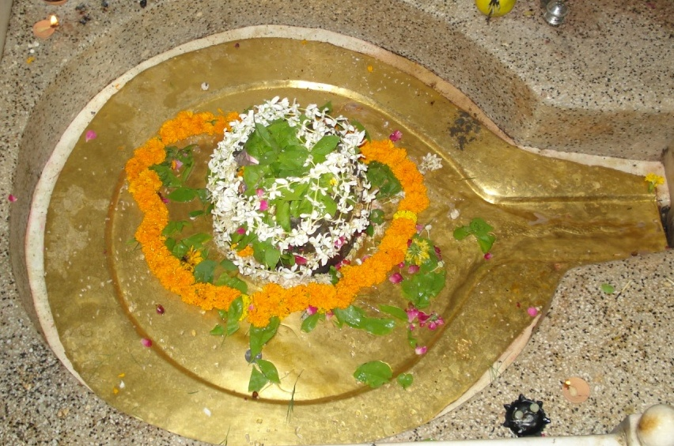 |
Aadi Mahadev Primordial Shiva Linga |
Shiva | North Kashi | No. A-3/92, behind Trilochan Temple | View Guide → | Mirror ↗ |

|
Abhay Vinayak Bestower of Fearlessness |
Vinayaka | East Kashi | D-17/111, Dasaswamedh Ghat inside the premises of Shooltankeshwar temple. Worsh | View Guide → | Mirror ↗ |

|
Adi Keshav First Deity who Welcomed Shiva to Kashi (Varuna Sangam) |
Vishnu | North Kashi | A-37/51, Rajghat Fort. Devotees can travel upto this place by autorickshaw or cy | View Guide → | Mirror ↗ |
|
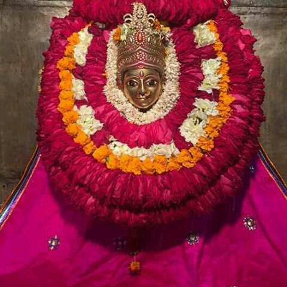 |
Annapurna Devi Supreme Provider of Food & Sustenance |
Devi | East Kashi | D-9/1, Annapurna Temple. The narrow lane or Gully approaching the temple is know | View Guide → | Mirror ↗ |

|
Arun Aditya Dwadasha Aditya #1 |
Surya | Zone unverified | Please watch our YouTube Video about Arun Aditya at following Link https://www.y | View Guide → | Mirror ↗ |

|
Asha Vinayak Fulfiller of Desires and Hopes |
Vinayaka | East Kashi | D-3/71, Mir Ghat, Bare Hanuman Temple. This falls in the vicinity of Vishalaksh | View Guide → | Mirror ↗ |
|
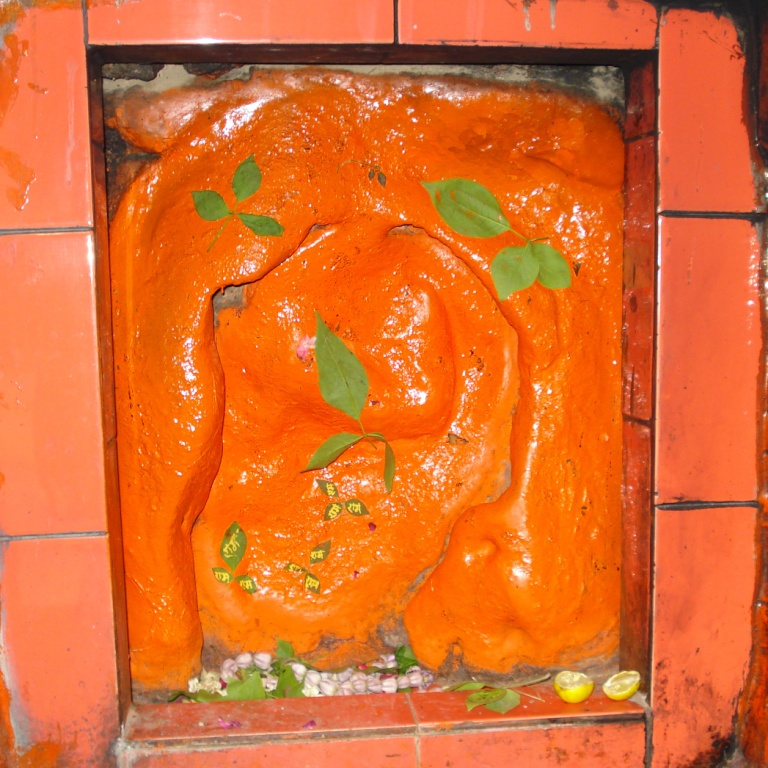 |
Asitang Bhairav Ashtabhairava #1 (East Protector) |
Bhairav | North Kashi | K.52/39, Maha Mrityunjay temple near Vriddh Kaleshwar | View Guide → | Mirror ↗ |

|
Atma Veereshwar Main Shiva Temple (Installed by Sage Vishwamitra) |
Shiva | East Kashi | Ck-7/158, Scindia Ghat which is a famous locality in Varanasi. This place can be | View Guide → | Mirror ↗ |
| Atyugra Narsimha Extremely Fierce Man-Lion Manifestation |
Vishnu | West Kashi | Ck.8/21, Gomath | View Guide → | Mirror ↗ | |

|
Avi Mukta Vinayak Lord of Avimukta Kshetra |
Vinayaka | West Kashi | According to some old timers, original Avi Mukt Vinayak idol has disappeared. N | View Guide → | Mirror ↗ |
|
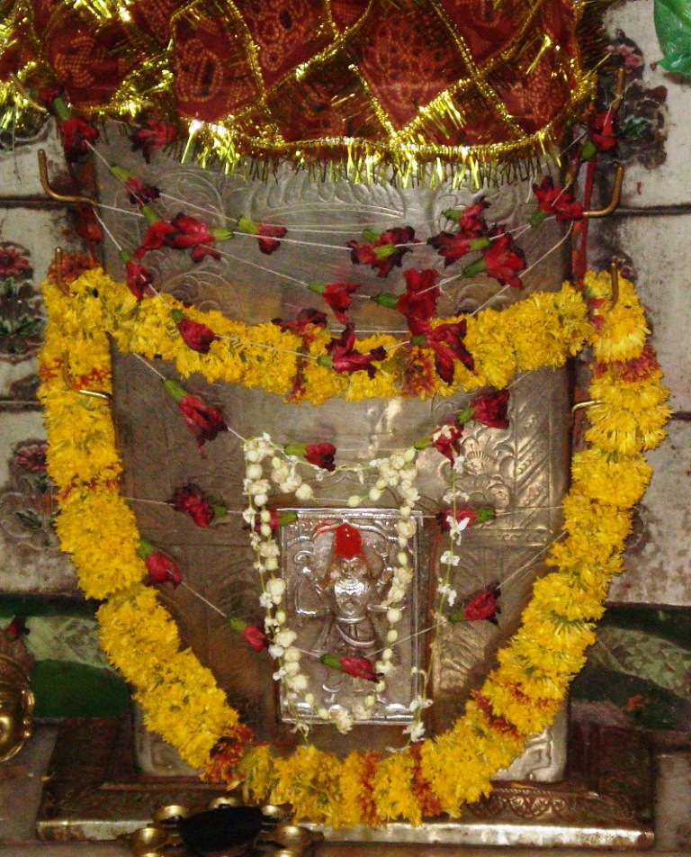 |
Bandi Devi Liberator from Captivity and Bondage |
Devi | East Kashi | No. D | View Guide → | Mirror ↗ |
|
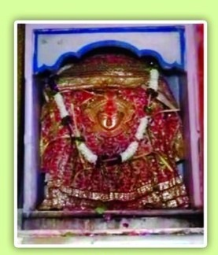 |
Bhavani Gauri Navagauri #7 (Near Vishwanath) |
Devi | Zone unverified | D.8/38, Ram Mandir annexed to the premises of Annapurna Devi | View Guide → | Mirror ↗ |
|
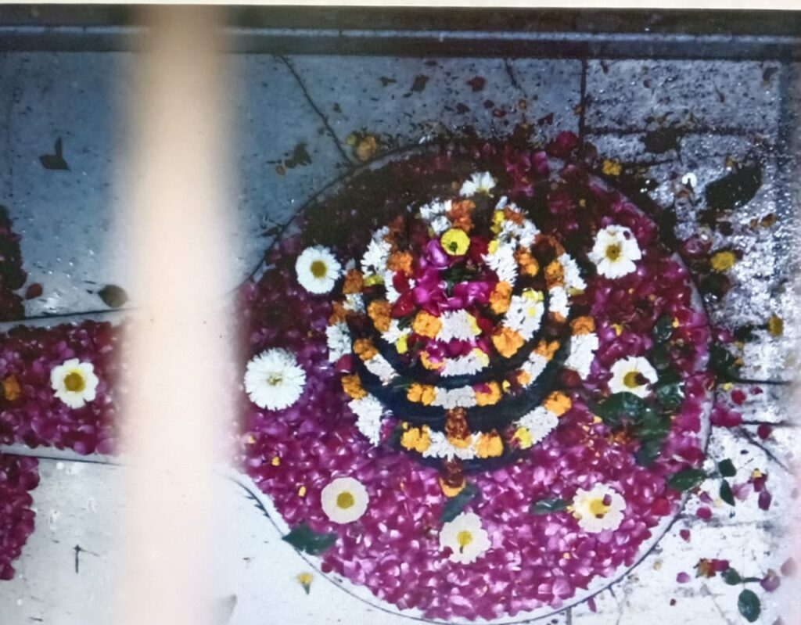 |
Bheemeshwar Bhimashankar Counterpart (Jyotirlinga #6 - Kashi Karvat) |
Shiva | Zone unverified | Ck.31/12, Kashi Karvat temple | View Guide → | Mirror ↗ |
|
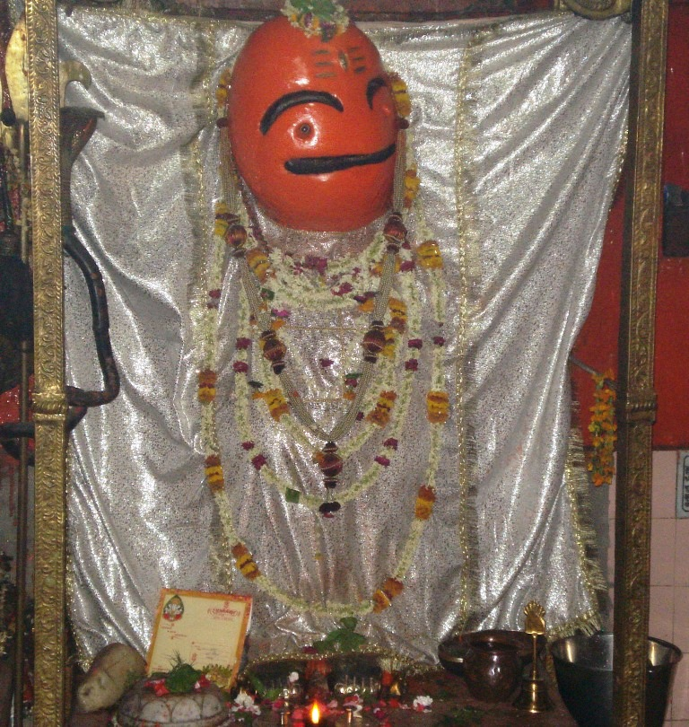 |
Bheeshan Bhairav Ashtabhairava #7 (North Protector) |
Bhairav | West Kashi | K.63/28, Bhoot Bhairav, near Jyeshteshwar | View Guide → | Mirror ↗ |
|
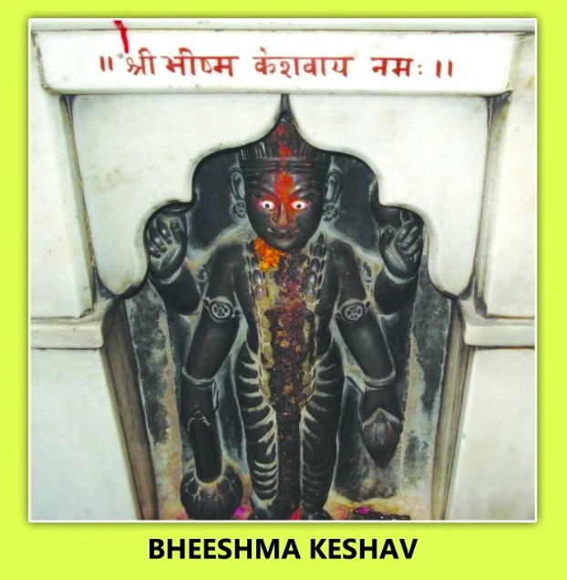 |
Bheeshma Keshav Installed by Pitamaha Bheeshma |
Vishnu | Zone unverified | Bheeshma Keshav is located in the temple premises of Mrityunjay Mahadev at K.52/ | View Guide → | Mirror ↗ |
| Bhrigu Keshav Installed by Maharishi Bhrigu |
Vishnu | North Kashi | Gola Ghat on the steps aloft the river Ganga. People can approach this place by | View Guide → | Mirror ↗ | |
|
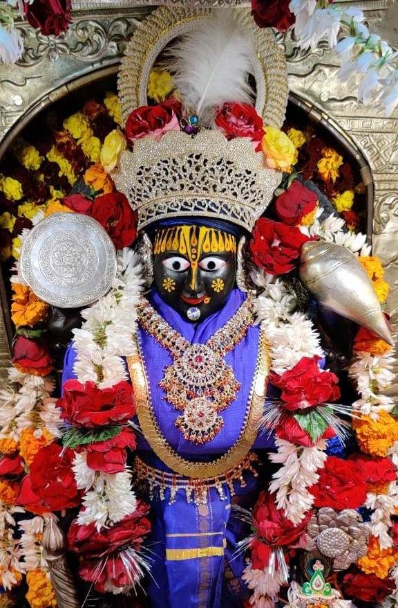 |
Bindu Madhav Supreme Presiding Vishnu Deity of Kashi (Panchganga Ghat) |
Vishnu | Zone unverified | op the Trishul (Trident) of Lord Shiva. Therefore, even Maha Pralay (great delu | View Guide → | Mirror ↗ |
|
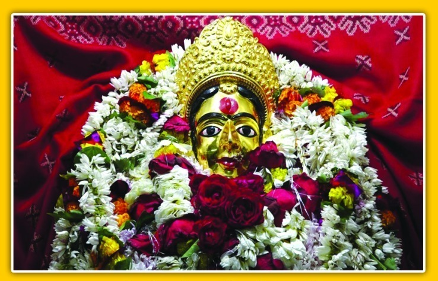 |
Brahma Charini Devi Navadurga #2 (Ganga Ghat) |
Devi | East Kashi | K-22/72, Durga Ghat. Devotees can travel upto Bhaironath by rickshaw and walk o | View Guide → | Mirror ↗ |
|
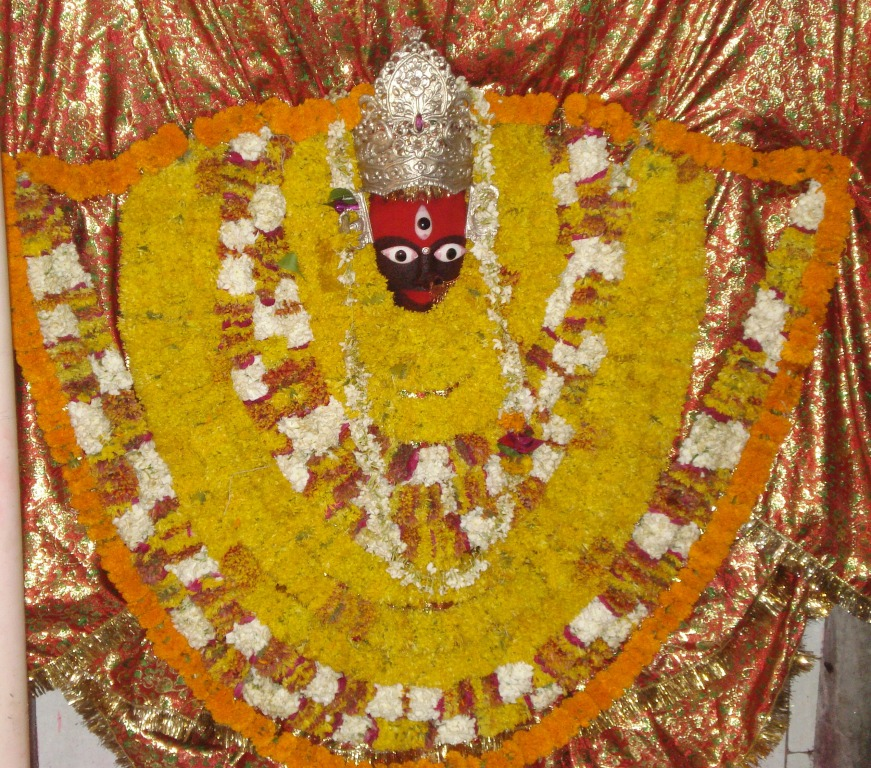 |
Chamunda Devi Slayer of Chanda and Munda |
Devi | South Kashi | This Devi is known by the name of Mahishasura Mardini near Lolark Kund, which is | View Guide → | Mirror ↗ |
|
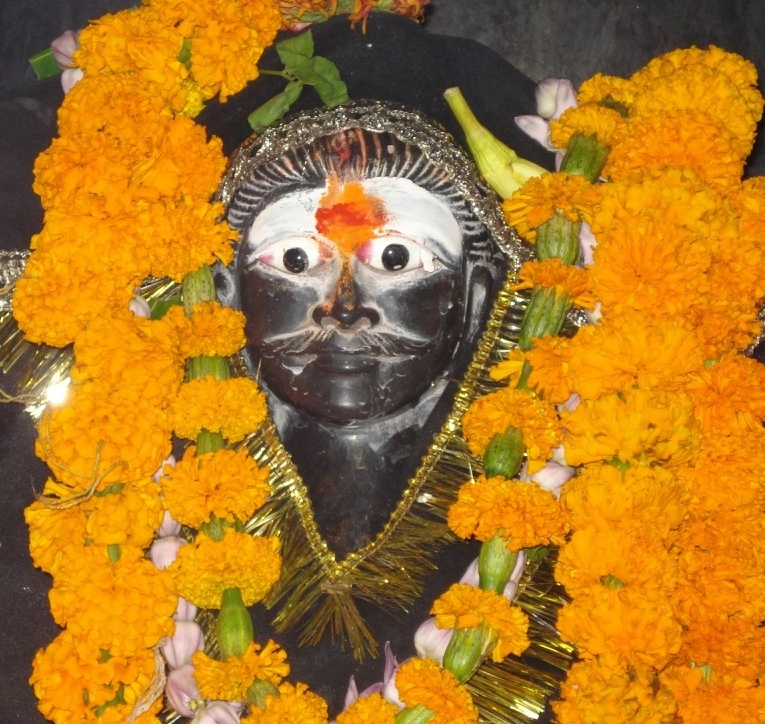 |
Chand Bhairav Ashtabhairava #3 (South Protector) |
Bhairav | South Kashi | Chand Bhairav is located in the temple premises of Durga Devi at B.27/2, Durga K | View Guide → | Mirror ↗ |
|
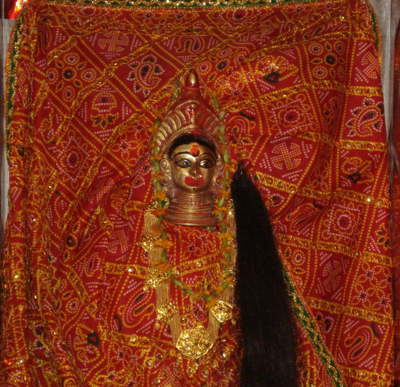 |
Chandi Devi Fierce Protector Form |
Devi | Zone unverified | several places in the Holy city of Kashi and Kaurmi Shakti is one of them. Shri | View Guide → | Mirror ↗ |
|
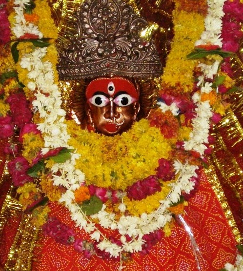 |
Charma Munda Devi Protector of Kashi Kshetra |
Devi | South Kashi | B-2/62 Bhadaini. If one proceeds after Mata Anandmayee Hospital towards Assi, th | View Guide → | Mirror ↗ |

|
Chintamani Vinayak Remover of All Worries (Near Kedargeshwar) |
Vinayaka | Zone unverified | K-56/42, East of Ishwar Gangi Talab, Babu Bazar. By worshipping Chintamani Vina | View Guide → | Mirror ↗ |

|
Chitra Ghanta Devi Navadurga #3 (Chandraghanta) |
Devi | West Kashi | Ck. 23/34, Chitra Ghanta Gulli | View Guide → | Mirror ↗ |

|
Dehli Vinayak Threshold Guardian of Kashi |
Vinayaka | Zone unverified | a village which is almost more than 20 kms. away from the heart of Varanasi city | View Guide → | Mirror ↗ |

|
Dharmeshwar Main Shiva Temple (Installed by Yama Dharmaraja) |
Shiva | East Kashi | D-2/21, Mir Ghat. The temple is approachable from a famous locality called Dash | View Guide → | Mirror ↗ |

|
Dhundhi Vinayak Principal Sovereign Vinayaka of Kashi (Kashi Vishwanath Corridor) |
Vinayaka | East Kashi | the entry point of Annapurna Temple via Gate No.1 | View Guide → | Mirror ↗ |

|
Draupad Aditya Dwadasha Aditya #2 |
Surya | West Kashi | Ck. 35/21, Akshay Vat, near Vishweshar Temple | View Guide → | Mirror ↗ |

|
Durg Vinayak Protector at Durga Kund |
Vinayaka | South Kashi | no. 27/1, behind Durga Kund | View Guide → | Mirror ↗ |
|
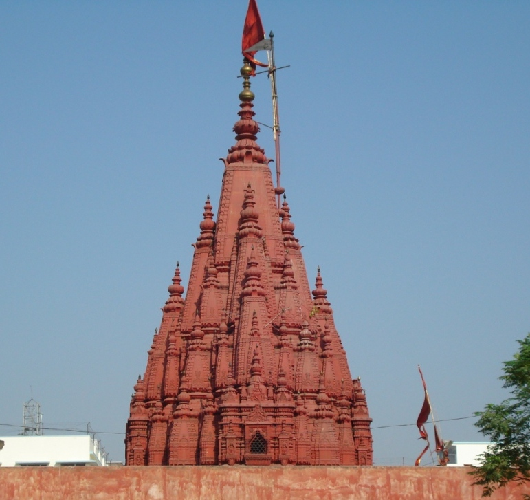 |
Durga Devi (Kooshmanda Durga) Navadurga #4 & Durgakund Protector |
Devi | South Kashi | Durga Kund area. People can travel upto this place in car/auto or cycle ricksha | View Guide → | Mirror ↗ |

|
Durmukh Vinayak Fierce-Faced Protector |
Vinayaka | Zone unverified | Ck.34/60, near Kashi Karvat Temlple | View Guide → | Mirror ↗ |

|
Dwar Vinayak Gateway Guardian Vinayaka |
Vinayaka | East Kashi | Dwar Vinayak also guards Kashi against evil forces, according to Kashi Khand. D | View Guide → | Mirror ↗ |

|
Dwi Mukh Vinayak Two-Faced Vinayaka (Near Panchganga Ghat) |
Vinayaka | West Kashi | D-51/90, West of Saamba Aditya, Suraj Kund. Worshipping this lord will give all | View Guide → | Mirror ↗ |

|
Eka Danta Vinayak Single-Tusked Lord |
Vinayaka | Zone unverified | D-32/102, Pushpa Danteshwar, Bengali Tola, Varanasi. He guards Anand Van (Kashi) | View Guide → | Mirror ↗ |

|
Gabhasteeshwar Main Shiva Temple (Installed by Surya / Mayukh Aditya) |
Shiva | North Kashi | K-24/34, Mangala Gauri Temple. Devotees can travel upto Bhaironath by auto or c | View Guide → | Mirror ↗ |

|
Ganeshwar (Rameshwar) Rameshwaram Counterpart (Jyotirlinga #7 - Man Mandir Ghat) |
Shiva | East Kashi | D.16/34, Manmandir Ghat | View Guide → | Mirror ↗ |

|
Ganga Aditya Dwadasha Aditya #3 |
Surya | East Kashi | No. 1/68, below Nepali Mandir, Lalita Ghat | View Guide → | Mirror ↗ |
|
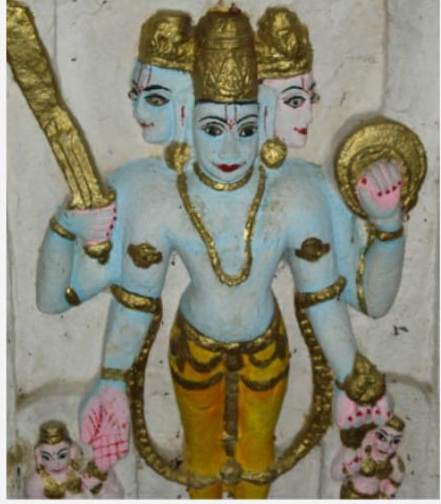 |
Ganga Keshav Installed by Vishnu at Lalita Ghat |
Vishnu | East Kashi | D.1/67, Lalita Ghat, just above the steps | View Guide → | Mirror ↗ |

|
Gopi Govind Lord of Gopis at Ganga Riverfront |
Vishnu | North Kashi | K.4/24, Lal Ghat near Birla Sanskrit Vidhyalaya, Birla House | View Guide → | Mirror ↗ |

|
Gyan Keshav Bestower of Divine Knowledge |
Vishnu | North Kashi | A-37/51, Adi Keshav Temple, Rajghat Fort. Devotees can travel upto this place by | View Guide → | Mirror ↗ |

|
Gyan Madhav Wisdom Aspect of Lord Madhava |
Vishnu | West Kashi | Ck.35/21, Vishwanath Temple compound near Akshay Vat | View Guide → | Mirror ↗ |

|
Gyan Vinayak Bestower of Supreme Spiritual Wisdom |
Vinayaka | West Kashi | Khowa Gulli Chowraha at Ck.28/4 Langlishwar temple | View Guide → | Mirror ↗ |

|
Hayagreev Keshav Horse-Necked Embodiment of Vedas |
Vishnu | South Kashi | B.3/25 near Anandmayee Hospital at Bhadaini | View Guide → | Mirror ↗ |
|
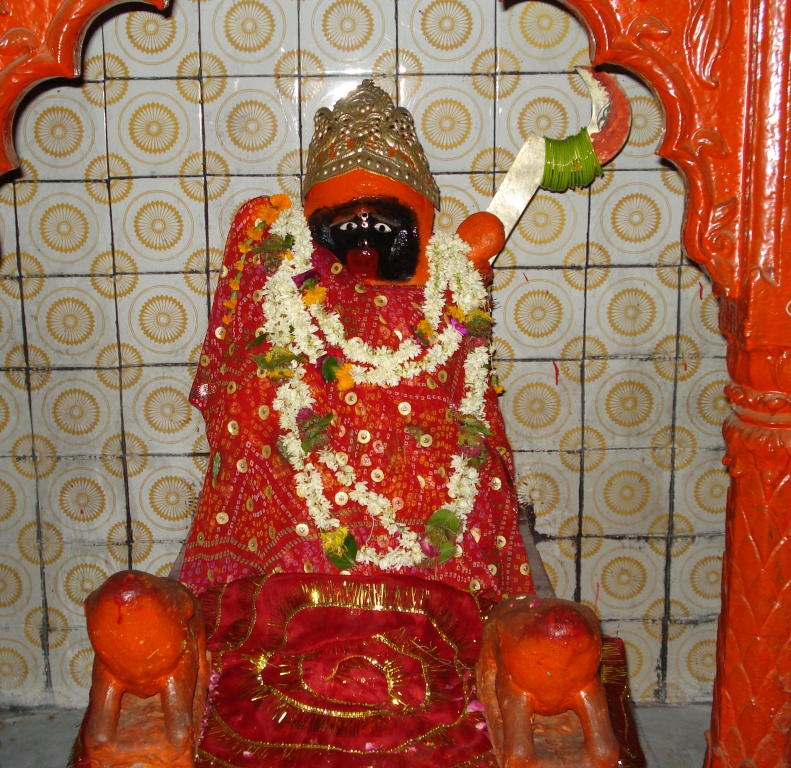 |
Hayakanti Devi Bestower of Radiant Beauty & Radiance |
Devi | West Kashi | D.52/35, Kali Mutt, Lakshmi Kund | View Guide → | Mirror ↗ |

|
Heramba Vinayak Five-Headed Protector Vinayaka |
Vinayaka | Zone unverified | C-21/14, Maldahiya. At the original place of this temple, a shopping complex, kn | View Guide → | Mirror ↗ |
|
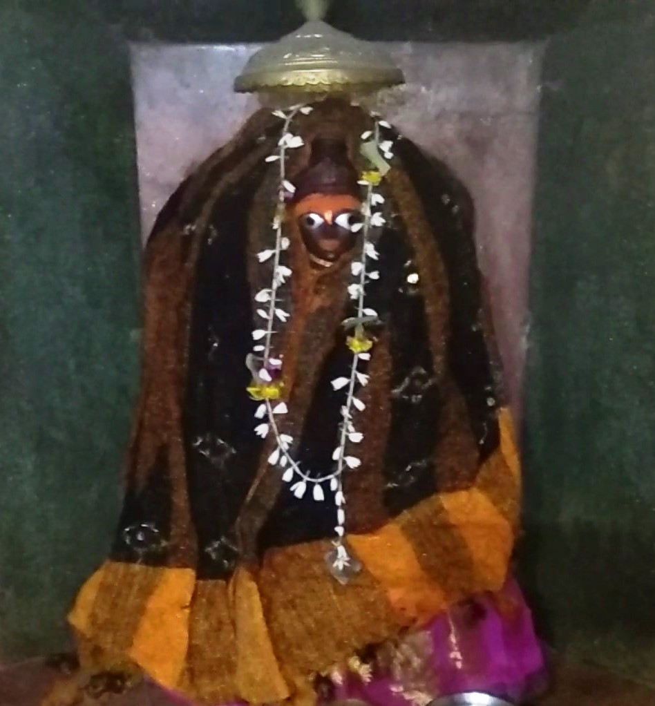 |
Jyeshta Gauri Navagauri #2 (Kashi Pura) |
Devi | North Kashi | K-63/24, Sapt Sagar Mohalla. The temple is approachable from a famous locality c | View Guide → | Mirror ↗ |
|
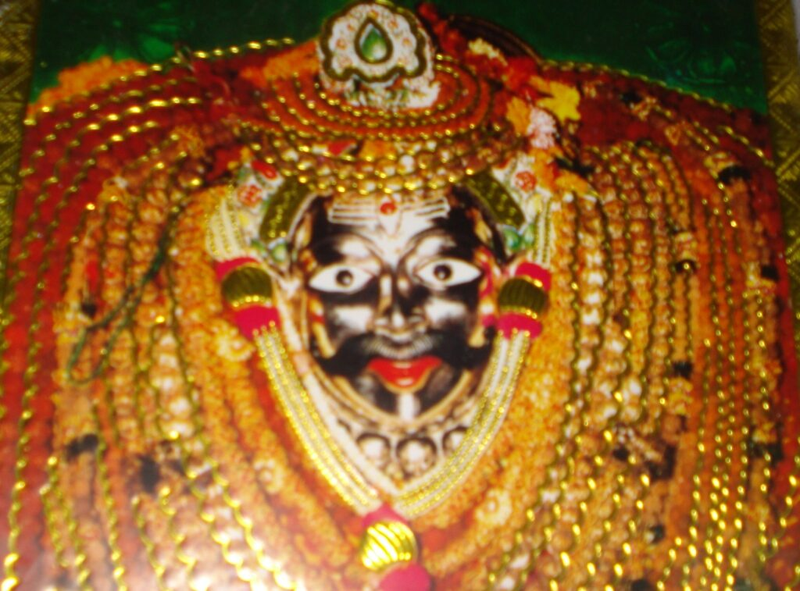 |
Kaal Bhairav Kotwal of Kashi (Supreme Protector) |
Bhairav | North Kashi | K-32/22, Bhaironath. People can approach this place by rickshaw either through | View Guide → | Mirror ↗ |
|
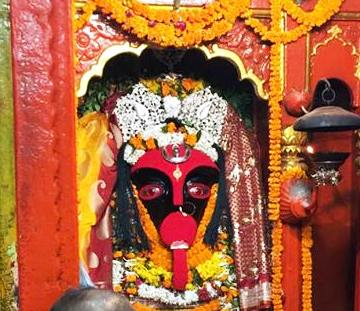 |
Kalratri Navadurga #7 & Mahavidya Kali counterpart |
Devi | East Kashi | D.8/17, Kalika Galli, which is a lane parallel to Annapurna – Vishwanath Lane | View Guide → | Mirror ↗ |
|
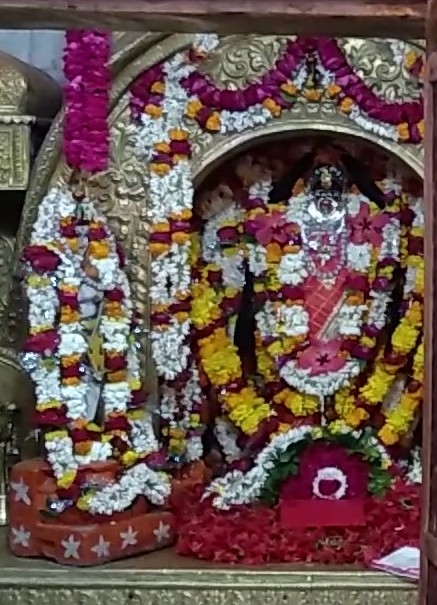 |
Kamakhya Devi (Kamakshi) Yoni Mudra Shakti Peeth Counterpart |
Devi | South Kashi | B.21/123, Kamachha | View Guide → | Mirror ↗ |
|
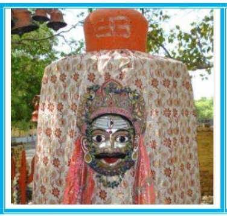 |
Kapal Bhairav (Laat Bhairav) Ashtabhairava #6 (Northwest Protector) |
Bhairav | North Kashi | A.1/123, Alaipur | View Guide → | Mirror ↗ |
|
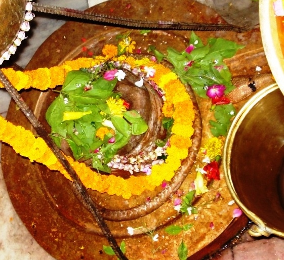 |
Kardhameshwar First stop on Panchkroshi Pilgrimage |
Shiva | South Kashi | No. B | View Guide → | Mirror ↗ |

|
Katyayani Navadurga #6 (Atma Veereshwar complex) |
Devi | East Kashi | Katyayini Devi is located in the premises of Atma Veereshwar Temple at Ck-7/158, | View Guide → | Mirror ↗ |

|
Kedareshwar Main Shiva Temple & Kedarnath Counterpart (Jyotirlinga #11) |
Shiva | South Kashi | B-6/102, Kedar Ghat which is a famous locality. It is approachable by cycle rick | View Guide → | Mirror ↗ |

|
Keshava Aditya Dwadasha Aditya #4 |
Surya | North Kashi | No. A-37/51, Adi Keshav Temple, Rajghat Fort | View Guide → | Mirror ↗ |

|
Khakholkh Aditya Dwadasha Aditya #5 |
Surya | North Kashi | Kameshwar Temple at A-2/9 North of Trilochan. The temple is approachable from a | View Guide → | Mirror ↗ |

|
Kolahala Narasimha Roaring Man-Lion Protector |
Vishnu | West Kashi | Ck.8/181 above Siddhi Vinayak, inside Narsimha Mutt | View Guide → | Mirror ↗ |

|
Krithi Vaseshwar Main Shiva Temple (Slayer of Gajasura) |
Shiva | Zone unverified | K-46/23, West of Har Tirath Pond, in Mrityunay Mahadev Road. Hans Teerth as men | View Guide → | Mirror ↗ |
|
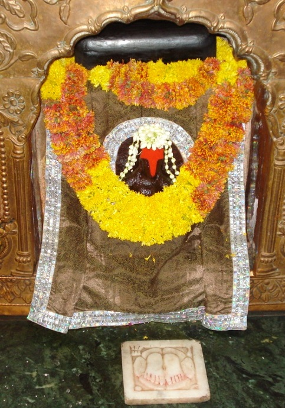 |
Krodhan Bhairav Ashtabhairava #4 (Southwest Protector) |
Bhairav | West Kashi | Batuk Bhairav temple at B.31/126, Kamachha, Varanasi | View Guide → | Mirror ↗ |

|
Kshipra Prasad Vinayak Quickly Pleased / Swift Boons |
Vinayaka | Zone unverified | C-18/47, Pitar Kunda, Pitreshwar Temple. Devotees can travel upto this place by | View Guide → | Mirror ↗ |
|
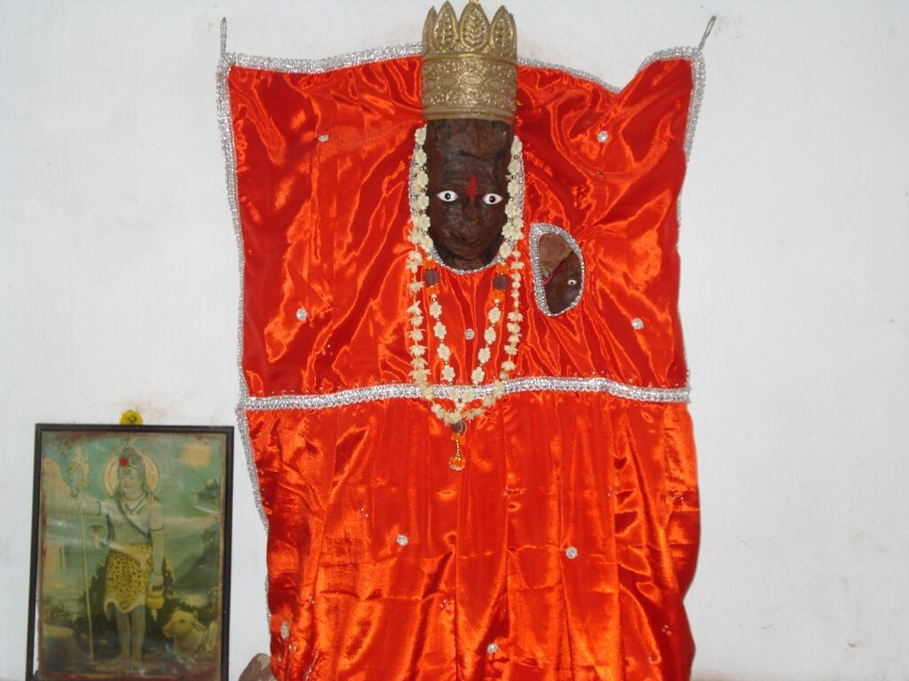 |
Lakshmi Narsimha Grace-Bestowing Narasimha with Lakshmi |
Vishnu | North Kashi | K.20/159, Raj Mandir, inside Dakshin Mukhi (one eyed) Hanumanji temple | View Guide → | Mirror ↗ |
|
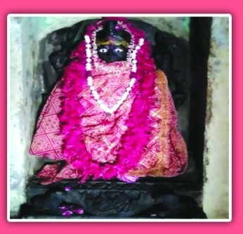 |
Lalitha Gauri Navagauri #6 & Mahavidya Lalitha/Shodashi counterpart |
Devi | East Kashi | Lalita Gauri is present at Ck.1/67, Lalita Ghat. If one desires to walk on foot, | View Guide → | Mirror ↗ |

|
Lambodara Vinayak Large-Bellied Preserver |
Vinayaka | South Kashi | B.7/206, Kedarghat Road and in this locality devotees normally know this temple | View Guide → | Mirror ↗ |

|
Lolark Aditya Dwadasha Aditya #6 |
Surya | South Kashi | Lolark Aditya/Lolark Kund is located near Tulsi Ghat. Persons can travel upto Ma | View Guide → | Mirror ↗ |
|
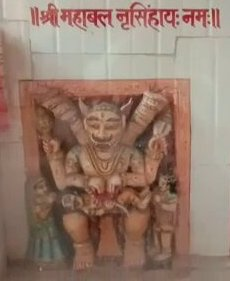 |
Mahabal Narsimha Mightiest Form of Narasimha |
Vishnu | North Kashi | A-2/9 North of Trilochan, in the premises of Kameshwar Temple. The temple is ap | View Guide → | Mirror ↗ |

|
Mahakaleshwar Mahakaleshwar Counterpart (Jyotirlinga #3 - Daranagar) |
Shiva | North Kashi | K-52/39, Mrityunjay Mahadev temple. People can approach this temple by rickshaw | View Guide → | Mirror ↗ |
|
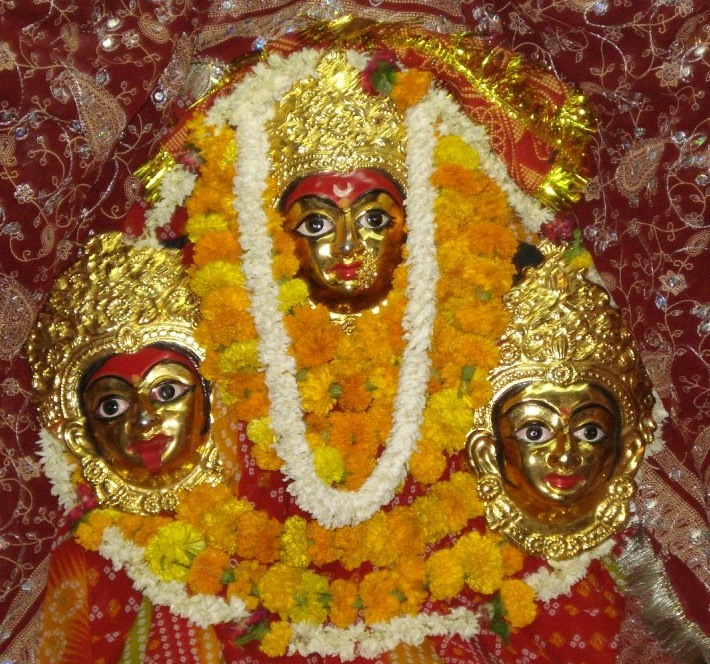 |
Mahalakshmi Gauri Navagauri #9 & Mahavidya Kamala counterpart |
Devi | West Kashi | D.52/40, Lakshmi Kund | View Guide → | Mirror ↗ |

|
Mangal Vinayak Auspicious Vinayaka (Near Manikarnika) |
Vinayaka | North Kashi | K-24/34, Mangala Gauri Temple, Bala Ghat. Devotees can travel upto Bhaironath by | View Guide → | Mirror ↗ |
|
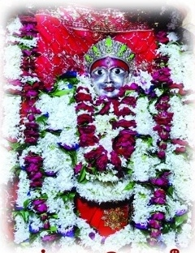 |
Mangala Gauri Navagauri #8 (Panchganga Ghat) |
Devi | North Kashi | K-24/34, Panchganga Ghat. Devotees can travel upto Bhaironath by auto or cycle | View Guide → | Mirror ↗ |
|
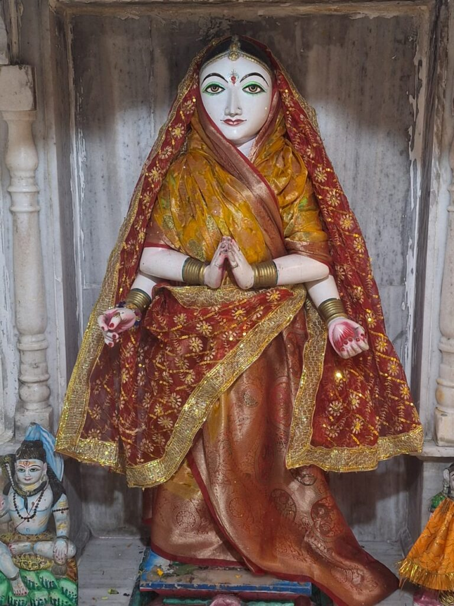 |
Mani Karnika Devi Presiding Deity of Manikarnika Teerth |
Devi | East Kashi | Ck.7/130, Scindia Ghat, opposite Atma Veereshwar Temple | View Guide → | Mirror ↗ |
|
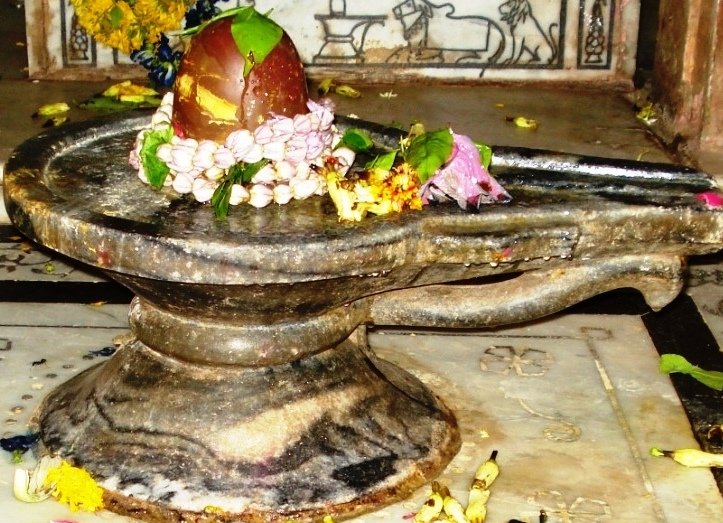 |
Markandeyshwar Associated with Sage Markandeya |
Shiva | West Kashi | Ck.36/10, in the bazar behind Gyan Vapi | View Guide → | Mirror ↗ |

|
Mayukh Aditya Dwadasha Aditya #7 |
Surya | North Kashi | No. K-24/34, Mangala Gauri Temple, Panchganga Ghat | View Guide → | Mirror ↗ |

|
Moda Vinayak Bestower of Joy |
Vinayaka | West Kashi | Ck.31/12, Kashi Karvat Temple, Naipali Khapra | View Guide → | Mirror ↗ |

|
Mrityunjay Mahadev Main Shiva Temple (Conqueror of Death) |
Shiva | North Kashi | K-52/39, Vriddha Kal, Mrityunjay Mahadev Temple. People can approach this templ | View Guide → | Mirror ↗ |

|
Mukhnirmalika Gauri Navagauri #1 (Panchganga Ghat) |
Devi | North Kashi | K.3/42, Hanumanji temple at Gai Ghat | View Guide → | Mirror ↗ |

|
Nageshwar Nageshwar Counterpart (Jyotirlinga #8 - Bhonsla Ghat) |
Shiva | West Kashi | House No. Ck | View Guide → | Mirror ↗ |
|
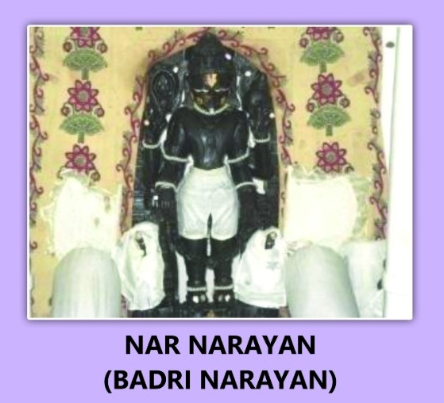 |
Nar Narayan Sage Avatars of Vishnu |
Vishnu | North Kashi | A.1/72, Badri Narayan Ghat steps near Gai Ghat | View Guide → | Mirror ↗ |
|
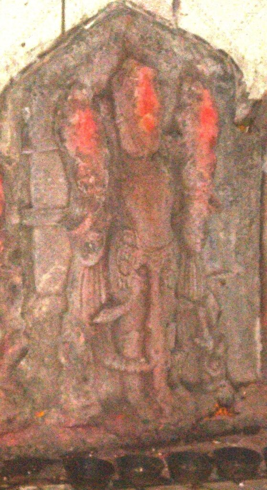 |
Narad Keshav Installed by Devrishi Narada |
Vishnu | North Kashi | A-10/80 Prahlad Ghat, inside Shitla Mandir opp. Prahladeshwar | View Guide → | Mirror ↗ |

|
Omkareshwar Main Shiva Temple & Omkareshwar Counterpart (Jyotirlinga #4) |
Shiva | North Kashi | A-33/23, Pathani Tola, North of Machhodari. Matsyodari Teerth as mentioned in K | View Guide → | Mirror ↗ |
|
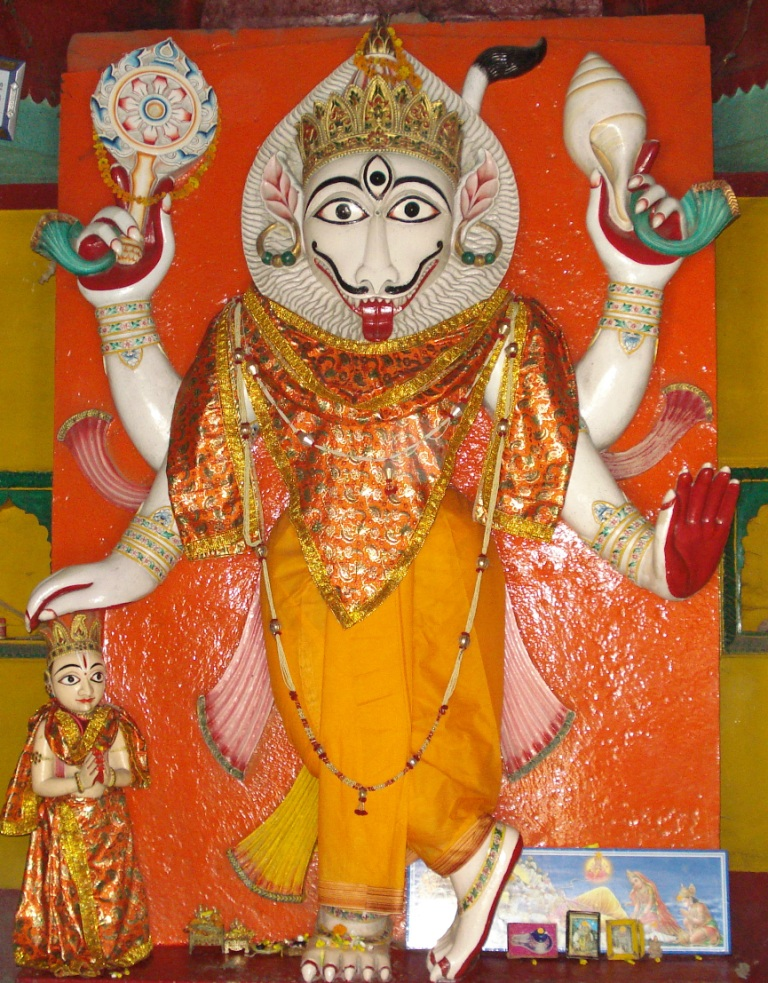 |
Prachand Narsimha Formidable Slayer of Hiranyakashipu |
Vishnu | South Kashi | B.1/151, Jagannath Temple, Assi Ghat | View Guide → | Mirror ↗ |
|
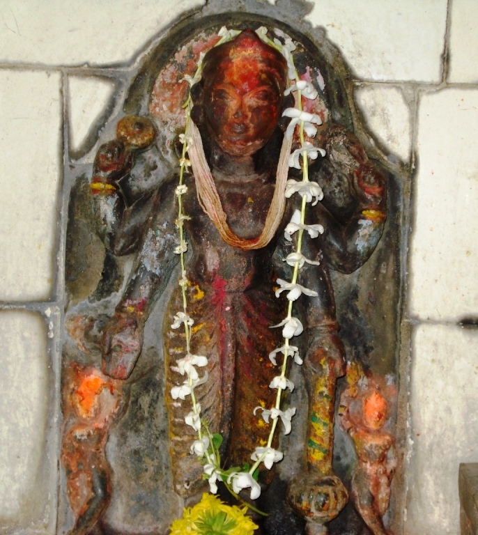 |
Prahlad Keshav Associated with Bhakta Prahlada (Prahlad Ghat) |
Vishnu | North Kashi | A-10/80 Prahlad Ghat inside Prahledeshwar temple, on the face of Ganges, on the | View Guide → | Mirror ↗ |

|
Pramoda Vinayak Bestower of Supreme Delight |
Vinayaka | Zone unverified | Specific street address not published in source text | View Guide → | Mirror ↗ |
|
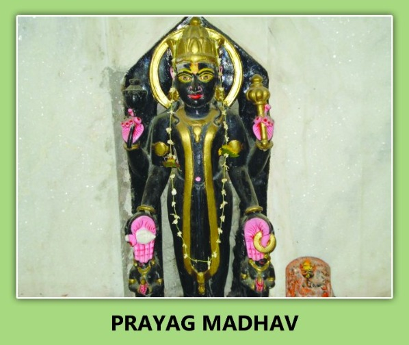 |
Prayag Madhav Confluence Form of Madhava (Dashashwamedh) |
Vishnu | North Kashi | D.17/111, in the premises of Ram Mandir at Dasaswamedh Ghat | View Guide → | Mirror ↗ |
|
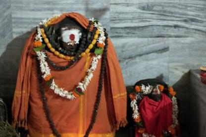 |
Ruru Bhairav Ashtabhairava #2 (Southeast Protector) |
Bhairav | South Kashi | B.4/16, Hanuman Ghat, Varanasi | View Guide → | Mirror ↗ |

|
Saamba Aditya Dwadasha Aditya #8 |
Surya | West Kashi | D-51/90 Surya Kund (Suraj Kund). This is a famous locality | View Guide → | Mirror ↗ |
|
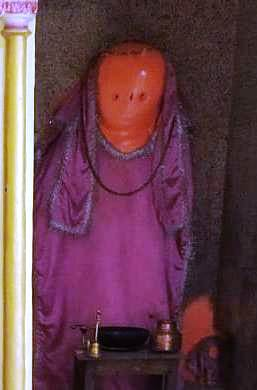 |
Samhar Bhairav Ashtabhairava #8 (Northeast Protector) |
Bhairav | North Kashi | A.1/82, Patan Darwaja, near Gai Ghat | View Guide → | Mirror ↗ |
|
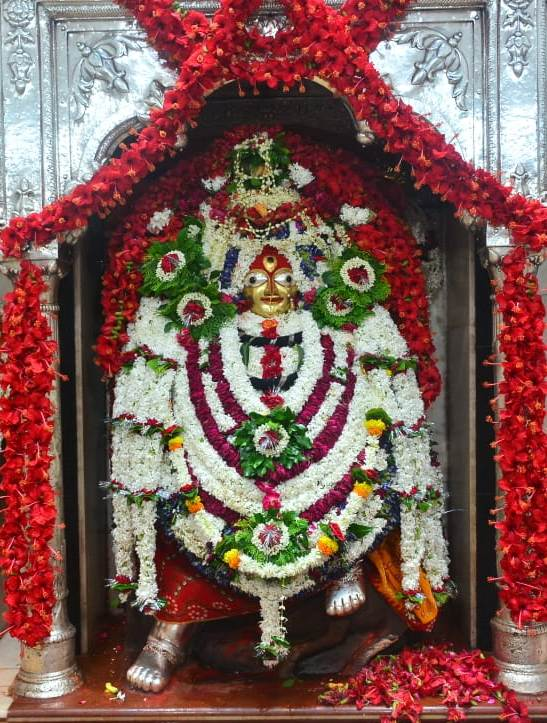 |
Sankata Devi Remover of Sins and Critical Difficulties |
Devi | West Kashi | Ck.7/159, Sankataji | View Guide → | Mirror ↗ |
|
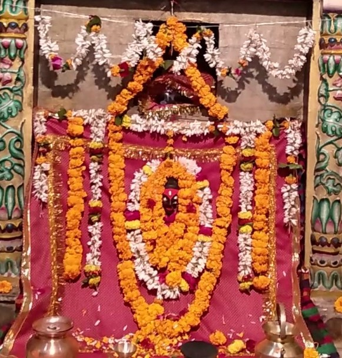 |
Shailputri Navadurga #1 (Marhia Ghat / Alipura) |
Devi | Zone unverified | A-40/11, Marhia Ghat. If one travels from Varanasi Railway station through G | View Guide → | Mirror ↗ |
|
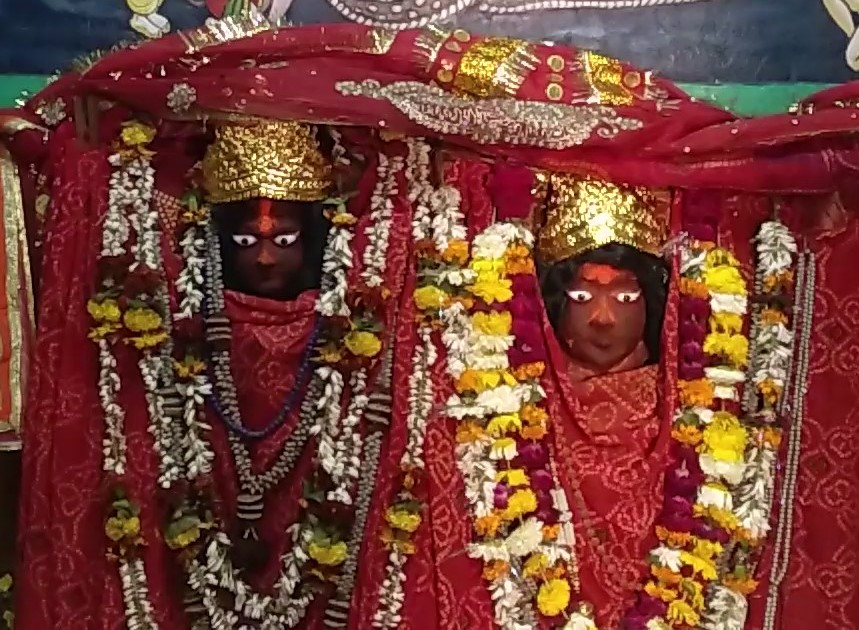 |
Shringar Gauri Navagauri #4 (Gyanvapi Wall) |
Devi | West Kashi | This Gauri is located behind Gyanvapi Masjid (mosque) and Darshan is allowed onl | View Guide → | Mirror ↗ |

|
Shwet Madhav White Form of Lord Madhava |
Vishnu | East Kashi | D.3/71, Big Hanuman temple at Mir Ghat | View Guide → | Mirror ↗ |
|
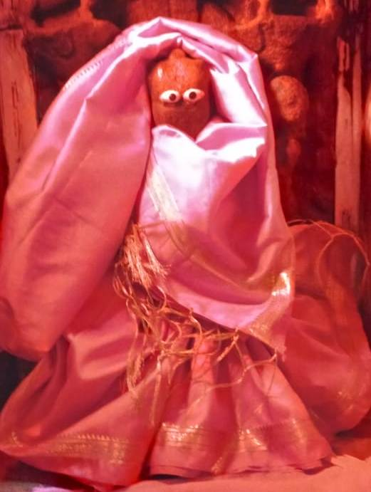 |
Siddha Lakshmi Devi Bestower of Spiritual & Material Siddhis |
Devi | East Kashi | Siddha Lakshmi Devi is located on the Wall at Ck.8/1, Opposite Siddhi Vinayak, | View Guide → | Mirror ↗ |
|
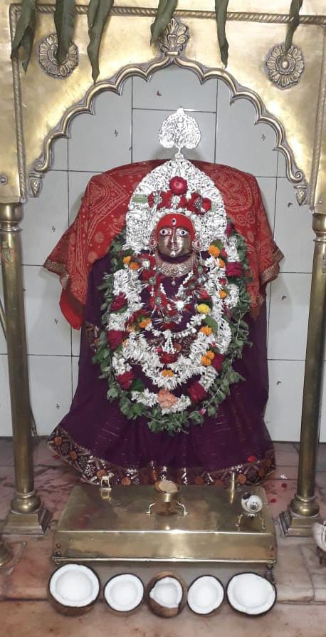 |
Siddheshwari Navadurga #9 (Siddhidatri) |
Devi | West Kashi | Ck.7/124, Siddheshwari Mohalla | View Guide → | Mirror ↗ |

|
Siddhi Vinayak Bestower of Perfection & Siddhis (Vishwanath Lane) |
Vinayaka | West Kashi | Ck. 9/1, near Mani Karnika Kund in the steps | View Guide → | Mirror ↗ |
|
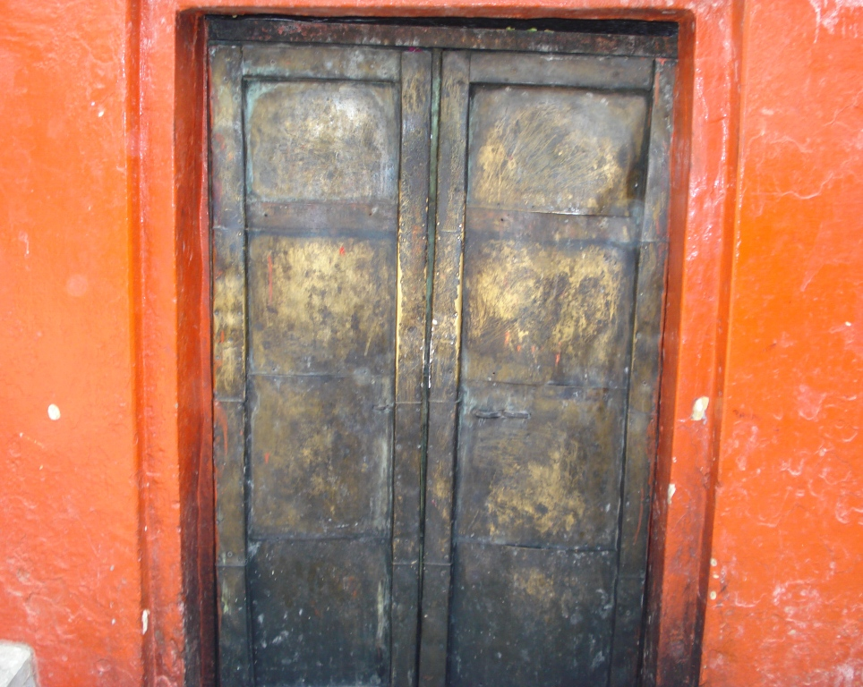 |
Skanda Mata Navadurga #5 (Jaitpura) |
Devi | Zone unverified | J.6/33, Jaitpura | View Guide → | Mirror ↗ |
|
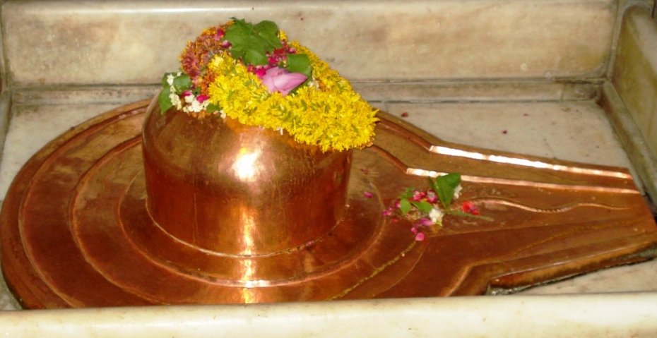 |
Someshwar Somnath Counterpart (Jyotirlinga #1 - Man Mandir Ghat) |
Shiva | East Kashi | Someshwar is locted at D.16/34, Manmandir Ghat. Devotees can travel upto Dasaswa | View Guide → | Mirror ↗ |
|
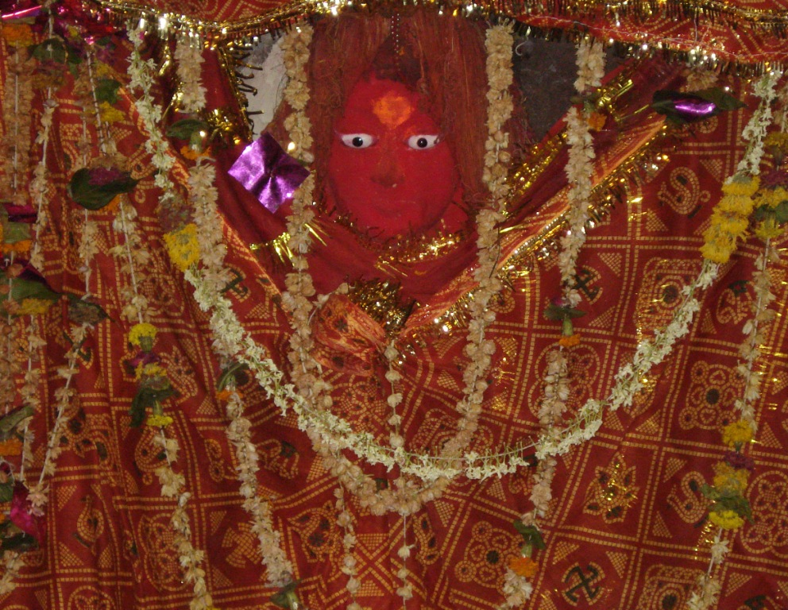 |
Sowbhagya Gauri Navagauri #3 (Gyanvapi) |
Devi | West Kashi | Ck.38/8, Adi Vishwanath Temple | View Guide → | Mirror ↗ |

|
Sthool Dant Vinayak Mighty-Tusked Vinayaka |
Vinayaka | East Kashi | D-16/34, Man Mandir, near Someshwar. This Vinayak is capable of granting Siddhi | View Guide → | Mirror ↗ |

|
Sumukh Vinayak Gracious-Faced Lord |
Vinayaka | Zone unverified | Specific street address not published in source text | View Guide → | Mirror ↗ |

|
Tamra Varaha Copper-Hued Boar Avatar |
Vishnu | West Kashi | Tamra Varaha is located outside House No.Ck.33/57, Neelkanth Mohalla in the slop | View Guide → | Mirror ↗ |

|
Tri Lokya Sundary Most Beautiful Across Three Worlds |
Devi | West Kashi | No. Ck | View Guide → | Mirror ↗ |
|
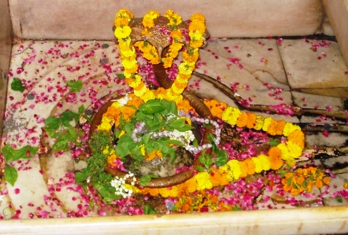 |
Triambakeshwar Trimbakeshwar Counterpart (Jyotirlinga #10 - Godowlia) |
Shiva | West Kashi | D-38/21, Hauj Katora. If a devotee proceeds from Godowlia towards Chowk, immedi | View Guide → | Mirror ↗ |

|
Tribhuwan Keshav Lord of the Three Worlds |
Vishnu | East Kashi | D.17/100, Bandi Devi, Dasaswamedh Ghat | View Guide → | Mirror ↗ |
|
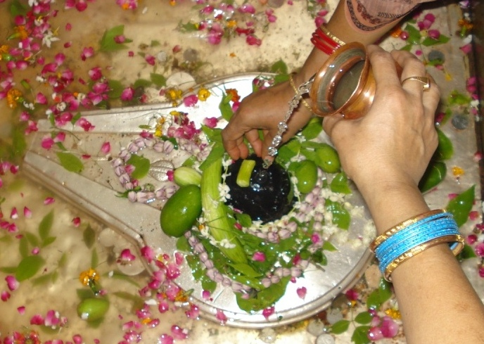 |
Trilochan The Three-Eyed Lord (Trilochan Ghat) |
Shiva | North Kashi | A-2/80, Trilochan Ghat. The temple is approachable from Birla Hospital after Ma | View Guide → | Mirror ↗ |

|
Tripura Bhairavi Mahavidya #5 (Bhairavi) |
Devi | East Kashi | D.5/24, Mir Ghat | View Guide → | Mirror ↗ |
|
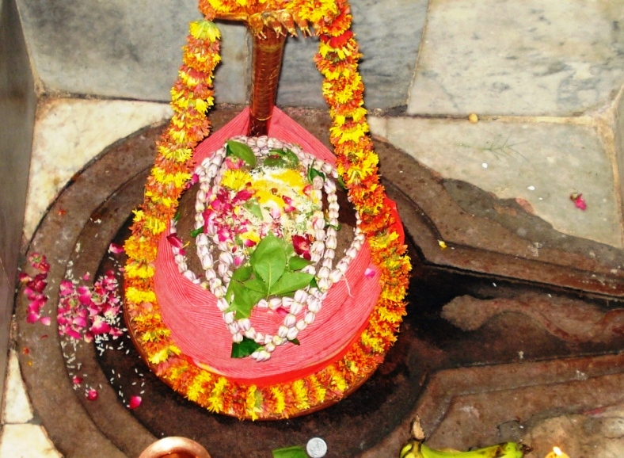 |
Tripurantakeshwar Mallikarjuna Counterpart (Jyotirlinga #2 - Sigra) |
Shiva | West Kashi | D.59/95, Sigra Tila (Mount of Mud) | View Guide → | Mirror ↗ |

|
Trivikrama Cosmic Three-Step Manifestation |
Vishnu | North Kashi | A-2/80, Trilochaneshwar Temple. Above the idol, it has been mentioned as Brihasp | View Guide → | Mirror ↗ |
|
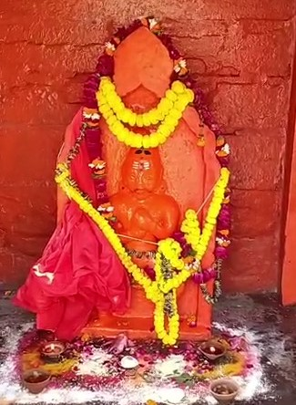 |
Unmat Bhairav Ashtabhairava #5 (West Protector) |
Bhairav | Zone unverified | Specific street address not published in source text | View Guide → | Mirror ↗ |

|
Uttarark Aditya Dwadasha Aditya #9 |
Surya | North Kashi | Uttarark Aditya is located in Alaipur, Bakaria Kund, near Varanasi City Station. | View Guide → | Mirror ↗ |

|
Vaikunth Madhav Lord of Vaikuntha in Kashi |
Vishnu | East Kashi | Ck.7/165, near Harish-chandreshwar, Scindia Ghat | View Guide → | Mirror ↗ |

|
Vakra Tund Vinayak (Bada Ganesh) Famous Bada Ganesh (Lohatia) |
Vinayaka | Zone unverified | K-58/101, Lohatia Bara Ganeshji. He removes ill effects paap karma (sins) commit | View Guide → | Mirror ↗ |

|
Vaman Keshav Dwarf Avatar Form of Vishnu |
Vishnu | North Kashi | A.2/29, Trilochan | View Guide → | Mirror ↗ |

|
Varahi Devi Matrika / Night Deity (Panchganga Ghat) |
Devi | East Kashi | D.16/84, Manmandir Ghat | View Guide → | Mirror ↗ |

|
Veer Madhav Heroic Aspect of Lord Madhava |
Vishnu | West Kashi | There are two locations of Veer Madhav. One is near the door of Atma Veereshwar | View Guide → | Mirror ↗ |

|
Vidar Narsimha Chest-Ripping Aspect of Narasimha |
Vishnu | North Kashi | A-10/82 Prahlad Ghat. People can approach this place by traveling in a rickshaw | View Guide → | Mirror ↗ |

|
Vimal Aditya Dwadasha Aditya #10 |
Surya | West Kashi | No. D-35/273, Gully behind Khari Kuan, Jangambari, near Godowlia | View Guide → | Mirror ↗ |
| Vindhya Devi Vindhyavasini Manifestation in Kashi |
Devi | East Kashi | Ck.2/33, outside Sankata Devi Temple | View Guide → | Mirror ↗ | |
| Vishalakshi Gauri Shaktipeeth & Navagauri #5 |
Devi | East Kashi | Devotees can find Vishalakshi temple at D.3/85, Mir Ghat. They can travel upto D | View Guide → | Mirror ↗ | |
| Vishwa Bhuja Gauri All-Embracing Universal Gauri |
Devi | East Kashi | D.2/15, near Dharam Koop (Dharmeshwar) | View Guide → | Mirror ↗ | |

|
Visweshwar (Vishwanath) Supreme Lord of Kashi & Jyotirlinga #7 |
Shiva | West Kashi | Ck-35/19, Chowk, Varanasi. The temple area has been widened to be known as Vishw | View Guide → | Mirror ↗ |

|
Vitank Narsimha Protector Narasimha Shrine |
Vishnu | South Kashi | the steps of Kedar Ghat, on left side. Kedareshwar Temple, Kedar Ghat is a famou | View Guide → | Mirror ↗ |

|
Vriddh Aditya Dwadasha Aditya #11 |
Surya | East Kashi | D-3/15, South of Bare Hanumanji at Mir Ghat. Devotees can approach this place b | View Guide → | Mirror ↗ |

|
Vridha Kalelshwar Main Shiva Temple (Conqueror of Time/Death) |
Shiva | Zone unverified | K-52/39, in the premises of Mrityunj Mahadev Temple. The temple is approachable | View Guide → | Mirror ↗ |

|
Yagya Varaha Cosmic Sacrificial Boar Avatar (Mir Ghat) |
Vishnu | Zone unverified | A.11/30, near Swarleeneshwar at Panch Agni Akhada Ghat | View Guide → | Mirror ↗ |

|
Yama Aditya Dwadasha Aditya #12 |
Surya | East Kashi | No. Ck | View Guide → | Mirror ↗ |
Data Integrity & Validation Report Summary
This knowledge base was compiled from 1,314 crawled pages and 326 original photographs from varanasitemples.in. Every address and puranic narrative reflects authentic textual statements published by the author.
- Surya (12 Shrines): 100% verified against Kashi Khand Chapter 9.
- Bhairav (9 Shrines): Kaal Bhairav and all 8 directional Ashtabhairavas 100% verified.
- Devi (32 Shrines): All 32 navigation shrines extracted; Dashamaha Vidya research matrix populated.
- Shiva (20 Shrines): 9 Main Shiva shrines + 12 Kashi Jyotirlinga counterparts 100% mapped.
- Vinayaka (22 Shrines): Dhundhi Vinayak, Bada Ganesh + 56 Vinayakas overview documented.
- Vishnu (28 Shrines): 28 prominent shrines covering Adi Keshav, Bindu Madhav, Madhavas, Narasimhas, and Varahas.